How to use this lesson
§0 · From last time. Lesson 3.1 covered what happens when text goes into the model. Now we cover what happens when the model needs to produce a structured action — a function call. This is the mechanism that makes ReAct (and every other agent paradigm) possible.
Business Scenario
Helix Research, Thursday.
Tom's hypothesis-generation agent has been making up tool names. Its trace shows:
Action: search_pubmed_advanced(query="BRCA2", year_min=2023)
Observation: ERROR: tool 'search_pubmed_advanced' not found.
Available tools: search_pubmed, get_paper, summarise_paper.
Action: search_pubmed_advanced(query="BRCA2", year_min=2023)
Observation: ERROR: tool 'search_pubmed_advanced' not found.
The agent hallucinated search_pubmed_advanced, then kept hallucinating it after being told it didn't exist. 4 tool calls wasted before it converged on the correct search_pubmed.
"Why does it ignore the error? And why does it hallucinate in the first place?"
The answer involves how function calling is implemented inside the model — and why "strict" function calling solves both problems.
Bridge to Topic
There are two ways to implement function calling: prompted (model emits text that looks like a function call) and constrained (model is forced by the decoding step to emit a valid call). The failure mode in Tom's trace is characteristic of prompted function calling. The fix is structural, not promptable.
Mind Map

Mermaid source
mindmap
root((Function Calling))
Prompted
Old style
Model emits JSON in text
Prone to malformed output
Prone to hallucinated names
Strict / Tool Use
Constrained decoding
Schema enforced at sampling
No malformed JSON possible
Tool name forced valid
Parallel tools
One LLM call multiple tools
Latency win
Cost win
Tool descriptions
Schema as docs
Examples
When to use
Elaboration
4.1 Prompted function calling (the old way)
Until ~2023, function calling was a prompting trick: include tool descriptions in the system prompt, ask the model to emit JSON in a fenced code block, parse the JSON in your code.
Failure modes:
- Malformed JSON (missing brackets, trailing commas).
- Hallucinated tool names (model invents tools that "should" exist).
- Argument-type drift (model passes a string when you expected a number).
- Refusal to emit the format (model decides to "be helpful" with prose instead).
Tom's regression is this last-mile drift: even when corrected, the model's next attempt can still hallucinate because the constraint is only in the prompt — not at decode time.
4.2 Strict / constrained tool use (the modern way)
OpenAI's function calling (since 2023), Anthropic's tool use (since 2024), Google's function calling all use the same underlying technique: constrained decoding. At each token, the sampler restricts which tokens are legal based on the tool schemas. The model literally cannot emit a tool name that isn't in the registry.
Implementation: a finite-state machine over the JSON schema. At every decoding step, the FSM specifies the set of legal next tokens. The sampler intersects this with the model's distribution.
Result:
- Tool name is guaranteed to be one of the provided.
- Arguments match the schema (right types, required fields present).
- No JSON parsing errors possible.
Tom's hallucination cannot happen with strict tool use. The model couldn't emit search_pubmed_advanced if that name isn't in the registry.
4.3 Parallel tool calls
Modern APIs allow the model to emit multiple tool calls in one response:
{
"tool_calls": [
{"name": "lookup_order", "args": {"id": "84291"}},
{"name": "query_tracking", "args": {"id": "84291"}},
{"name": "check_payment", "args": {"id": "84291"}}
]
}
Execute them in parallel; latency = max(tool_latency), not sum. For Acme's refund flow, this cuts p95 latency from 3.6s to 1.2s.
When to use: when tool results are independent (one doesn't condition the next). When not to use: when subsequent tool choice depends on the previous result — then you need sequential ReAct.
4.4 Tool descriptions are documentation
The model's choice of tool is conditioned on the tool's description. A vague description leads to wrong tool choice; a precise one leads to correct tool choice.
Bad:
{
"name": "search",
"description": "Searches things"
}
Good:
{
"name": "search_pubmed",
"description": "Searches PubMed for biomedical research papers. Use this for any query about diseases, drugs, genes, or clinical trials. Returns up to 20 paper IDs with titles and abstracts. For paper content, use get_paper(id) afterwards.",
"parameters": {
"query": {"type": "string", "description": "Search query in PubMed syntax. Example: 'BRCA2[Gene] AND clinical trial[Publication Type]'"},
"year_min": {"type": "integer", "minimum": 1900, "maximum": 2030, "description": "Earliest publication year (inclusive)"}
}
}
The good description tells the model when to use the tool, what it returns, what comes next. This is where 80% of the tool-selection quality comes from.
Problem Statement
Convert this prompted-style tool use to strict tool use. Diagnose what was wrong with the original.
System: "You have these tools: search(q), get(id), summarise(text).
Emit your action as JSON in a code block.
Available tools: search, get, summarise."
User: "Find papers on BRCA2 and summarise the most relevant."
Identify three failure modes the prompted version is vulnerable to. Write the strict tool-use replacement (Anthropic format).
Solution Walkthrough
Three vulnerabilities of the prompted version:
- Malformed JSON — model can emit unparseable output.
- Hallucinated tool names — model can emit
search_advancedeven though onlysearchexists. - Wrong argument types —
searchcould receive a JSON object instead of a string.
Strict tool-use replacement:
const tools = [
{
name: "search",
description: "Search PubMed for papers. Returns list of paper IDs with titles.",
input_schema: {
type: "object",
properties: { q: { type: "string", description: "Search query." } },
required: ["q"],
},
},
{
name: "get",
description: "Retrieve full text of a paper by ID.",
input_schema: {
type: "object",
properties: { id: { type: "string" } },
required: ["id"],
},
},
{
name: "summarise",
description: "Summarise text into 3-5 sentences.",
input_schema: {
type: "object",
properties: { text: { type: "string" } },
required: ["text"],
},
},
];
const response = await anthropic.messages.create({
model: "claude-sonnet-4-6",
tools,
messages: [{ role: "user", content: "Find papers on BRCA2 and summarise the most relevant." }],
});
The schema constrains every tool call at decode time. Tom's hallucination becomes impossible.
Mathematical Foundation
7.1 Constrained decoding as a sampling restriction
Let $p(t \mid c)$ be the model's probability over next-token $t$ given context $c$. Let $L \subseteq V$ be the legal-token set (per the FSM at this position). The constrained sampling distribution is:
$$ p'(t \mid c) = \begin{cases} p(t \mid c) / Z & t \in L \ 0 & t \notin L \end{cases} $$
where $Z = \sum_{t \in L} p(t \mid c)$ is the normaliser. The model still picks the most likely legal token, so the constraint rarely hurts quality (if $L$ is well-designed). It can hurt if the model wants to say "I don't know" but the schema requires a structured answer — handle this by including an explicit "refused" option in the schema.
7.2 The cost of strict mode
Strict tool use has slightly higher latency (FSM evaluation per token) but eliminates retry loops. For Tom's regression: 4 wasted tool calls × 800ms × $0.04 = ~$0.13 wasted per ticket × 60k tickets/week = $7,800/week. Strict mode eliminates this entirely.
Technical Deep-Dive
8.1 When constrained decoding fails
The model can still pick semantically wrong tools even when syntactically constrained. Example: model calls summarise(text="BRCA2") when the intent was search(q="BRCA2"). The schema is satisfied; the choice is wrong. Mitigation: tool descriptions, few-shot examples, eval coverage.
8.2 Tool description style guide
- Lead with when to use ("Use this when…").
- State what it returns in concrete terms.
- Specify what comes next ("After this, call X to get Y").
- Add negative examples ("Don't use this for…").
8.3 Parallel vs sequential — the decision
if subsequent_tool_choice_depends_on(prior_result):
use sequential (ReAct loop)
elif tools are independent and all_known_upfront:
use parallel (one LLM call)
else:
use sequential
When in doubt, sequential. Parallel speedup is nice; correctness is non-negotiable.
What This Unlocks
- Lesson 3.3 extends the constrained-decoding principle to all structured outputs, not just tool calls.
- Module 4 uses strict tool use as the only allowed mode for Sherpa.
- Module 7 covers MCP, which standardises how tool schemas and descriptions are served to the model.